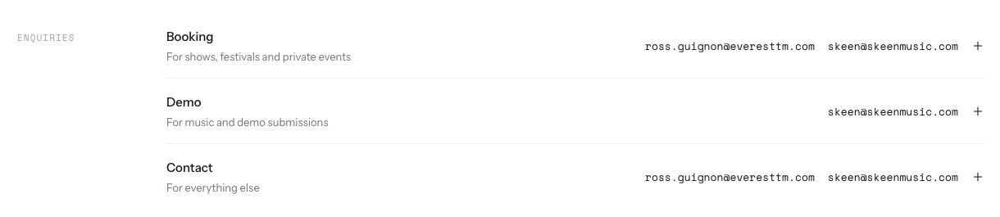
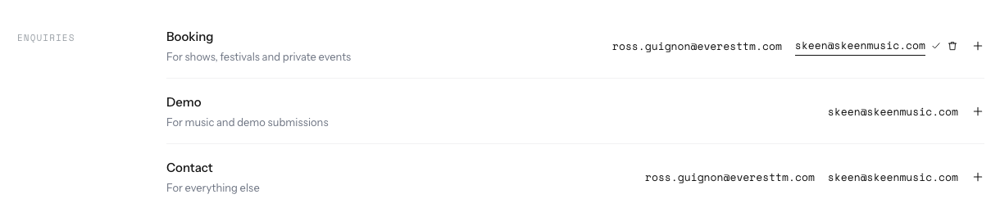
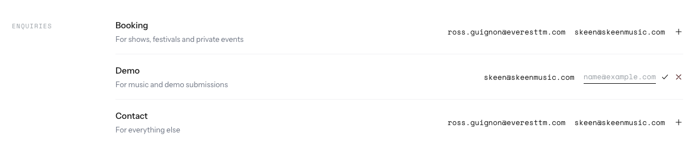
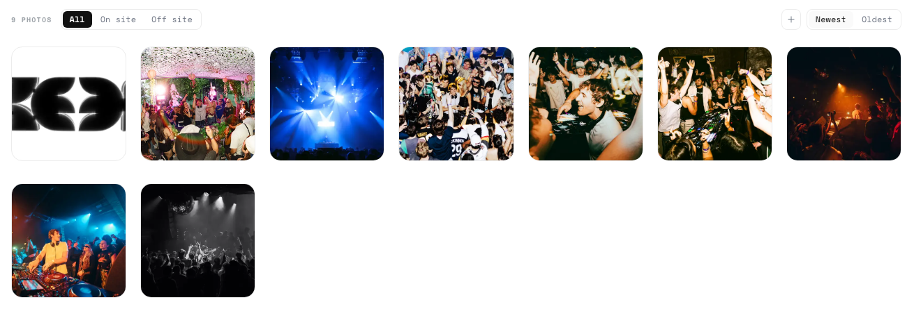

The + is ink at rest and blue on hover, as the live page draws it today.
Convertbefore | after, Skeen's real data
The chips and the dashed + go. Each genre is plain text in the value column, in the Name row's type. Click one to edit or delete it; the + ends the row.
recommend: convert · it then reads like the Name and Type rows above it. One watch: “Tech House” is told apart from “House” only by the 16px gap.
The chip and the dialog over the card go. Click Jigitz: its name and website open in place as two lines, with ✓ and trash. The + opens the same two lines.
recommend: convert · a dialog on top of a modal was the heaviest part of this row. The website is still one click away.
Same as Lineup with one field: names as text, click one to rename or delete it, the + adds a name.
recommend: convert, with Lineup · both use the same chip-and-dialog pattern today (featured-chips.tsx, support-acts.tsx).
“Add quote” becomes a bare +. Adding opens Who, What and Link as lines with ✓ and ×. A saved quote reads as text and opens on click, with its trash.
recommend: convert · Skeen has no quotes yet, so there is no Clicked shot. A saved quote would open the way an Answer does.
Already plain text at rest. The hover pencil goes: click the answer itself. ✓ sits beside the field, not in the end column. “Add question” becomes a bare +.
recommend: convert · the smallest change in this set. The “comes from” rows stay links.
Rows are already text, with × on hover today. Click X: its handle opens as a line with ✓ and trash (trash = off the site, the connection stays). “Add button” becomes a bare +. It still opens the picker.
recommend: convert, lightly · the handle edits the same link Connections does. Adding stays the picker, because socials come from Connections. Skeen has none left to add.
The tinted boxes, the ON SITE pill and the REMOVE word go. Click a contact: its label and address open as lines with ✓ and trash. A + ends the list.
recommend: convert · open question: the on/off-site toggle has no place left. The list is on-site only, so trash may be enough. The + is new: today Contact can only bring back one taken off the site.
Click the address: it opens as a line with ✓. No trash and no +: the site declares these buttons, and an empty address means no link.
recommend: convert · not a list you add to, but it should open the same way as its neighbours.
Cards, ON SITE pills and the standing trash go, so venue names stop cutting off. Click a date: the venue opens with ✓ and trash (= off the site). “Add date” becomes a bare + at the end, still going to the Tour page.
recommend: convert the look now · decide whether the venue should be editable here (today it is not). Deleting a date stays on the Tour page.
Keepthe audit's two
Only one change: the trash hides until its row is hovered. Clicked = the Cream row hovered.
recommend: don't convert · each row holds a picture, a swatch or a font, not a line of text, so there is nothing to type into.
As is.

recommend: don't convert · photos are dropped and picked, not typed, and each one's actions already show only on hover.